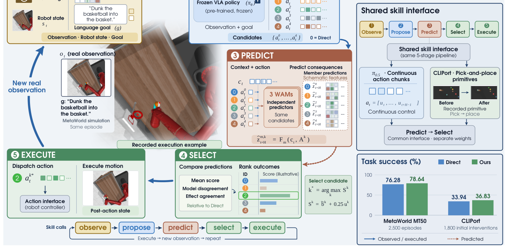
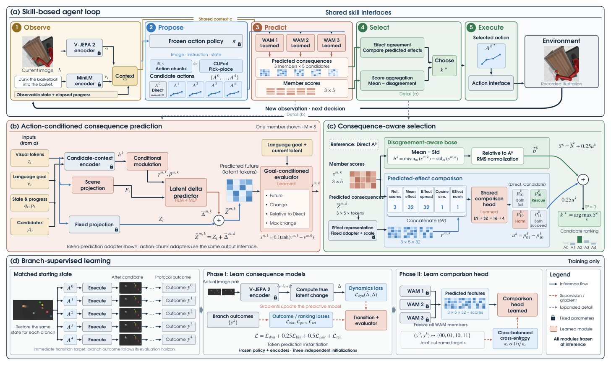

EmbodiedSkills 深度调研笔记
速览
| 项 | 内容 |
|---|---|
| 一句话 | 每个技能决策都是提案：guarded runtime 先查前置条件再执行、执行后用新观测验证——六阶段 AgentLoop（Observe/Plan/Preflight/Execute/Verify/Recover），低层 π₀.₅ 出有界 chunk；RoboTwin 2.0 86.20%、LIBERO 97.40%；去掉验证掉到 48.2% |
| 冻结/可换 | 低层 VLA（OpenPI/π₀.₅，可插拔可任务适配）；高层 Qwen3-VL + 组件 LoRA；AgentLoop 接口固定 |
| 演化 | 统一 trajectory schema 记录规划/执行/验证/恢复事件，供组件级 SFT 与可选在线适应 |
| 基准 | RoboTwin 2.0（50 任务）、LIBERO 四套件、RMBench 四个记忆任务（12.5%——记忆仍是短板） |

① 动机：模型生成的技能决策≠可执行
- 端到端 VLA 擅长短时动作预测，但长程任务需要感知、规划、执行、验证、恢复的闭环；模型说"放置"不代表当前状态可放置、也不保证结果会被检查。
- LLM agent 能拆步子但活在文本域，可能提出物理上不可能的动作、依赖过期视觉。
- 解法：把"模型想说"和"物理能做"拆开——policy 只提案，runtime 强制。
② 架构：可执行 skill 契约 + 六阶段 AgentLoop

- skill 契约：typed 输入/输出、prerequisites、exec 操作、post 状态更新、fail 证据映射；模型输出通过 schema 与前置校验前只是提案。
- AgentLoop 六阶段：Observe → Plan → Preflight（前提/类型/freshness 检查）→ Execute（π₀.₅ 有界 chunk）→ Verify（新观测判进度）→ Recover（修订重入）。非固定流水线，策略可重入各阶段。
- Policy–runtime 分离：高层 VLM 只发 RunSkill / AdvanceStage / FinishRun；runtime 用 guard 强制 phase 兼容、artifact freshness、动作 schema；被 block 的决策写入 trace 而非静默执行。
- 依赖证据变化时 runtime 使相关 artifact 失效——防陈旧观测授权新动作。
③ 关键消融（5,000 episodes/设置，最硬的证据）
| 设置 | 宏观成功率 | 说明 |
|---|---|---|
| 完整 AgentLoop | 86.20% | 语义子任务 + 中间验证 + 有界 chunk 可重试 |
| 无验证 | 48.2% | 固定子任务序列、同总预算、无结果检查 → -38pp |
| 无子任务 | 34.4% | 每 chunk 给整任务指令 |
| 每子任务一块 | 19.5% | 无 continuation/重试 |
- 结论：验证的价值在于结果条件化的分支（观察结果并改变后续行为），不是孤立的"verifier 增益"。
④ 数据与结果
- 低层任务适配策略：RoboTwin 2.0 五十任务均值 86.20%（> 公开 π₀.₅ 参考 82.74%——注意口径为参考列非受控重跑）；LIBERO 四套件宏均 97.40%；
- 记忆短板：RMBench 四个记忆依赖任务仅 12.5%——每任务单独微调的 specialist 不解决跨回合记忆；
- 真机/开源：AgentLoop、三基准适配器、OpenPI 集成、Qwen3-VL LoRA 训练脚本已开源（checkpoint 需自训）。
④A 主结果对比（笔记已核数字）
- RoboTwin 2.0 五十任务均值：86.20%（π0.5 公开参考 82.74%，口径为参考列非受控重跑）；
- LIBERO 四套件宏均：97.40%；
- RMBench 四个记忆依赖任务：12.5%——每任务单独微调的 specialist 无法解决跨回合记忆（诚实暴露短板）。
④B 核心消融（笔记已核数字）
- 去掉验证门控（guarded runtime）：RoboTwin 86.20% → 48.2%——验证-重试是 AgentLoop 可靠性的最大单一来源；
- 其余变体（34.4% / 19.5%，不同组件关闭组合）均大幅低于完整版；
- 结论：skill 契约 + guarded runtime 的工程完整性 = 性能，去掉任一道门控系统即退化。
⑤ 信息流
Observe → Plan（语义子目标+预算）→ Preflight（guard 检查）
→ Execute（π₀.₅ subgoal 条件 chunk）→ Verify（fresh evidence）
├─ Continue/Advance → Execute
├─ Reobserve/Replan → Observe
└─ Recover → 修订后重入 Plan
全程写入结构化 trajectory（planner/verifier/低层可独立 SFT 或替换）
⑥ 例子
"把容器放上盘子"：Plan 拆出"抓容器"子目标；Preflight 发现上次抓取证据是 3 步之前的旧帧（freshness 失败）→ 强制 Reobserve；执行中容器滑落，Verify 用新帧判失败，Recover 生成"以更大开度重抓"并写回 trace。
⑦ 簇内定位
- 与 Harness VLA：互补——Harness VLA 冻结原语+记忆，EmbodiedSkills 冻结接口+guarded runtime（外部读报原话："与 Harness VLA 的冻结原语路线互补"）；
- 与 SERA/AdaHVLA：runtime 固定 vs harness 可编辑——EmbodiedSkills 证明"哪怕 harness 不学，光有验证分支就值 38 个点"；
- 与 HumanCLAW：互证 verifier 与紧凑上下文的价值；
- 弱点与 RMBench 记忆类任务正是 RoboFoundry/RoboHarn-Evo（记忆/知识侧自进化）要补的位。